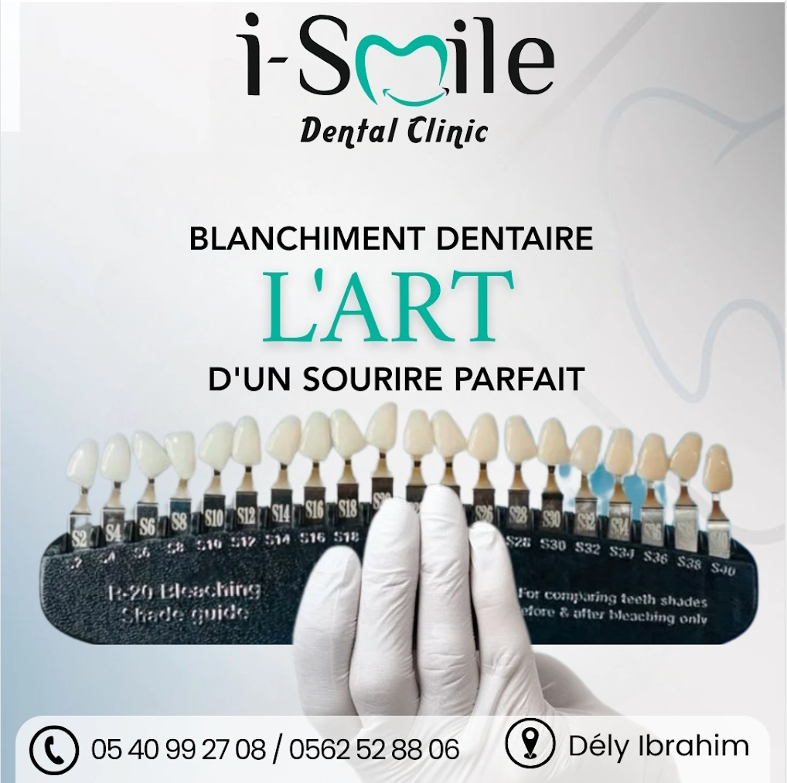
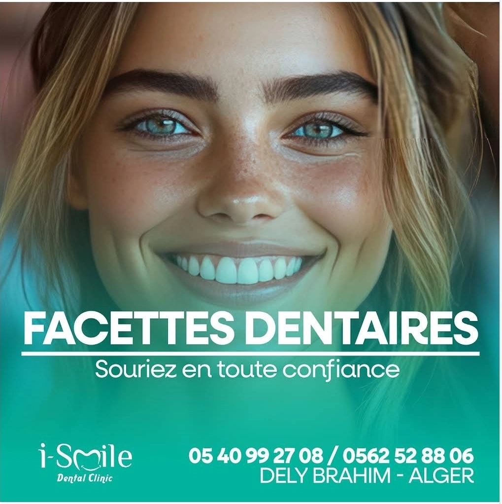
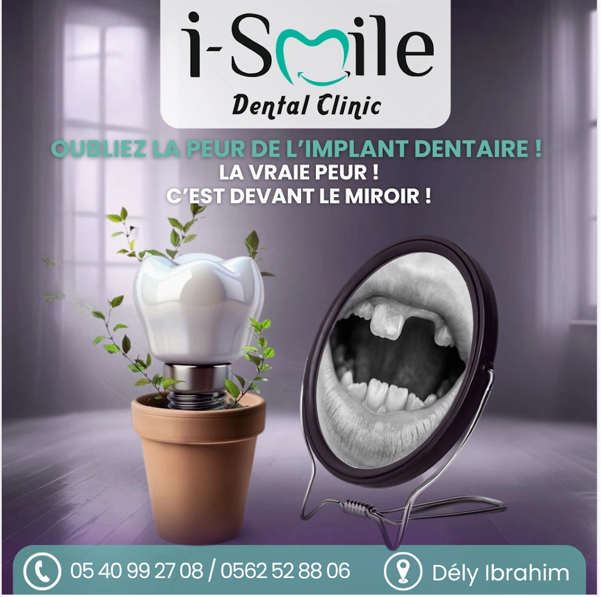
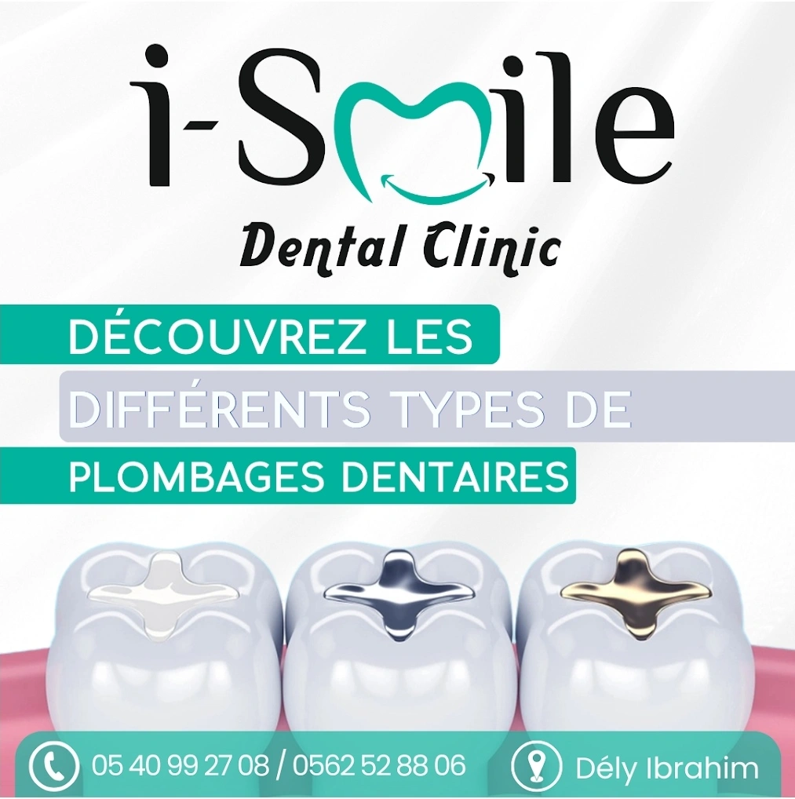
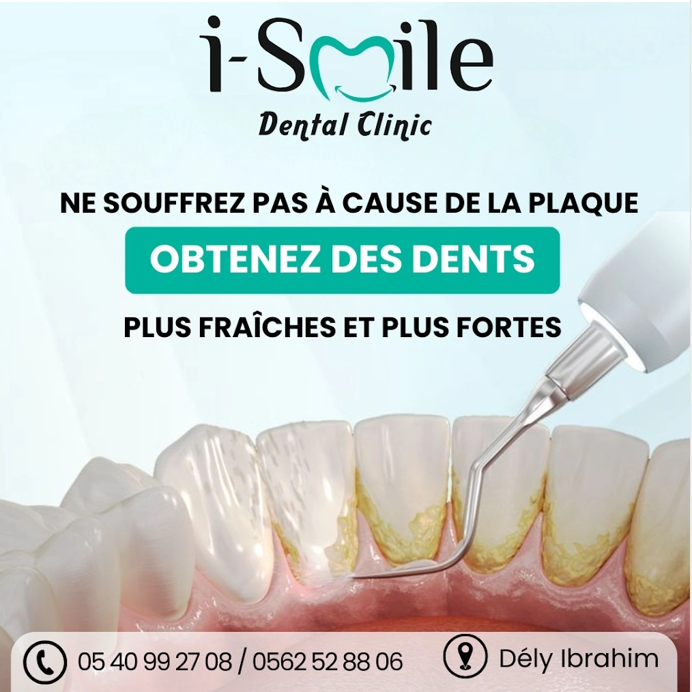
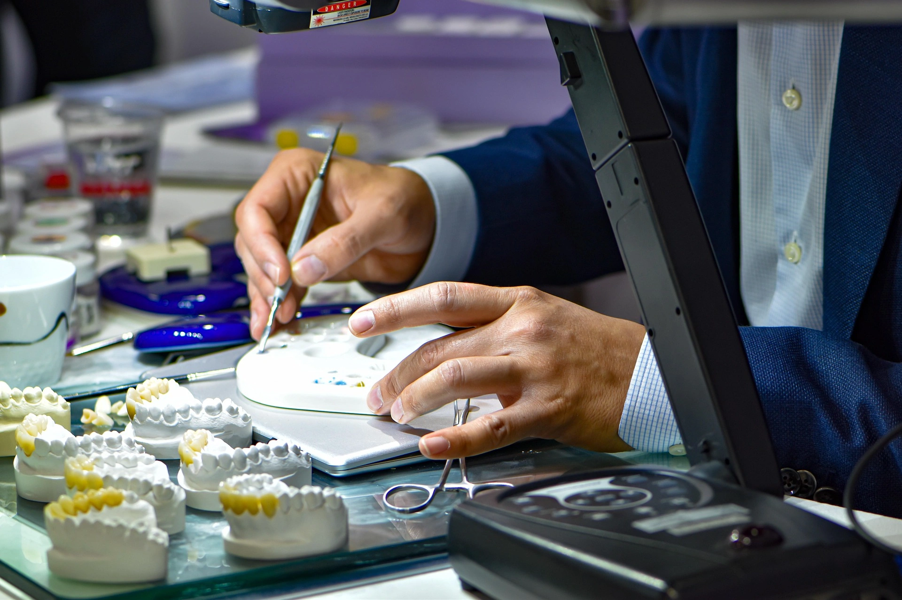
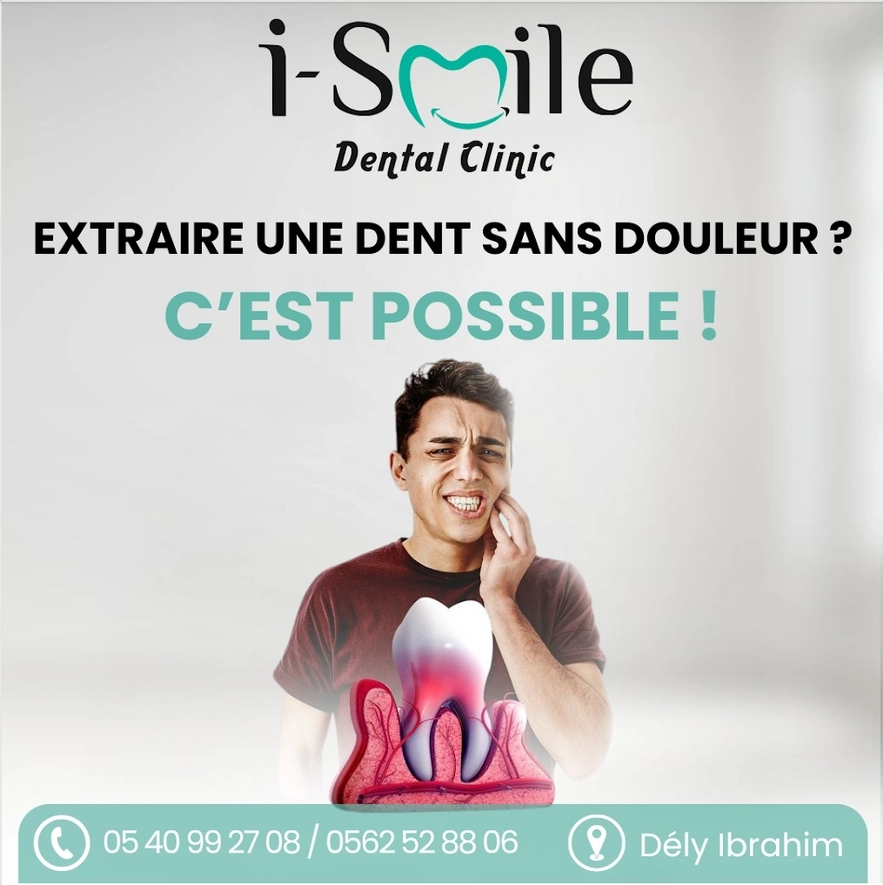

Blanchiment
Vous souhaitez un sourire plus éclatant ? Le blanchiment dentaire redonne brillance et éclat à vos dents en toute sécurité, avec des résultats visibles dès la première séance.
DécouvrirSoins complets, implants et esthétique dentaire. Une équipe à l'écoute pour un sourire sain et éclatant.
Des prestations complètes avec un matériel de pointe, pour toute la famille.

Vous souhaitez un sourire plus éclatant ? Le blanchiment dentaire redonne brillance et éclat à vos dents en toute sécurité, avec des résultats visibles dès la première séance.
Découvrir
Les facettes dentaires offrent un sourire harmonieux en corrigeant les imperfections esthétiques. Retrouvez confiance et éclat grâce à une solution durable et sur mesure.
Découvrir
Un implant dentaire bien entretenu peut durer de nombreuses années, offrant une solution durable pour remplacer une dent manquante et retrouver confort et sourire naturel.
Découvrir
Diagnostic et traitement des troubles de l'occlusion pour une fonction masticatoire optimale et une protection durable de vos dents.
Découvrir
Un détartrage régulier permet de prévenir les caries, les maladies des gencives et la mauvaise haleine. Découvrez la fréquence idéale pour entretenir vos dents.
Découvrir
Prothèses fixes et ponts en zircone pour restaurer fonction et esthétique. Des solutions durables adaptées à chaque situation clinique.
Découvrir
Douleur intense, dent cassée ou infection ? Notre équipe prend en charge vos urgences dentaires avec rapidité et douceur, 7j/7.
Découvrir